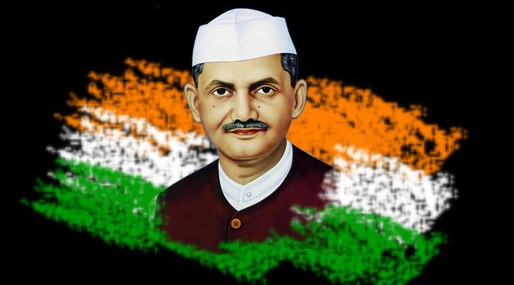

LAL BAHADUR SHASTRI

Born: 2 October 1904
Place of Birth: Mughalsarai, Varanasi, Uttar Pradesh
Parents: Sharada Prasad Shrivastava (Father) and Ramdulari Devi (Mother)
Wife: Lalita Devi
Children: Kusum, Hari Krishna, Suman, Anil, Sunil and Ashok
Education: Mahatma Gandhi Kashi Vidyapeeth, Varanasi
Political Association: Indian National Congress
Movement: Indian Independence Movement
Political Ideology: Nationalist; Liberal; Right-wing
Religious views: Hinduism
Passed Away: 11 January 1966
Memorial: Vijay Ghat, New Delhi
Lal Bahadur Shastri was the second Prime Minister of independent India. He took oath after the sudden demise of Jawaharlal Nehru, the first Prime Minister. Relatively new to the high office, he led the country successfully through Indo-Pakistan War in 1965. He popularized the slogan ‘Jai Jawan Jai Kisan’, recognizing the need for self-sustenance and self-reliance as the pillars to build a strong nation. He was a man of exceptional will power that was belied by his small frail stature and soft-spoken manner. He wished to be remembered by his work rather than well-rehearsed speeches proclaiming lofty promises.
Early Life and Education
Lal Bahadur Shastri was born on October 2, 1904, to Ramdulari Devi and Sharada Prasad Shrivastava, in Mughalsarai, United Provinces (modern day Uttar Pradesh). He shares his birthday with Mahatma Gandhi, the father of the nation. Lal Bahadur was against the prevailing caste system and therefore decided to drop his surname. The title "Shastri" was given after the completion of his graduation at Kashi Vidyapeeth, Varanasi in 1925. The title "Shastri" refers to a "scholar" or a person, adept in the "Holy Scriptures".
His father Sharada Prasad, a schoolteacher by profession, passed away when Lal Bahadur was barely two years old. His mother Ramdulari Devi took him and his two sisters to their maternal grandfather, HazariLal's house. Lal Bahadur acquired virtues like boldness, love of adventure, patience, self-control, courtesy, and selflessness in his childhood. After completing his primary education at Mirzapur, Lal Bahadur was sent to Varanasi, where he stayed with his maternal uncle. In 1928, Lal Bahadur Shastri married Lalita Devi, the youngest daughter of Ganesh Prasad. He was against the prevailing "dowry system" and so refused to accept dowry. However, on the repeated urging of his father-in-law, he agreed to accept only five yards of khadi (cotton, usually handspun) cloth as dowry. The couple had 6 children.